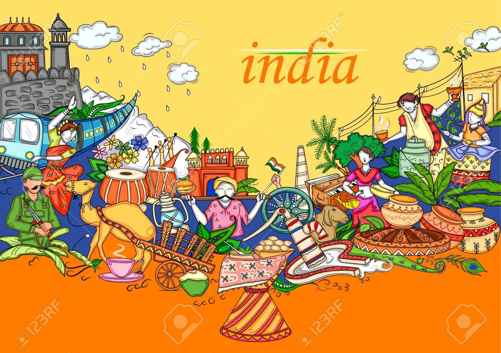

INDIA: The Land of Diversity
-
India is a kaleidoscope of cultures that includes umpteen variations in food, clothing, language, music and religious beliefs.
This colourful spread has been shaped by the long history and unique geography of this land. Though cut off from the world by three oceans and the highest chain of mountains,
this penissula has been invaded time and again through the almost inaccessible mountain passes. Besides, more than four hundred main languages,
there are thousands of others including dialects that are distinctly different to each other.
-
The diversity of India's languages can be understood by the fact that the Indian currency has 15 languages,
besides Hindi and English, printed on it, and most sign boards are written in English, Hindi and the state language.

-
India is one of the most religiously diverse nations of the world with each individual free to follow his own rites and beliefs.
Home to four of the world's major religions, minor religions too play an important role in the lives of the people.
-
Indian cuisine is so very diverse that it is practically impossible to know and taste all the dishes prepared in the country.
If the northern people are predominantly wheat eaters, the rest of India are avid rice eaters. Whilst fish is an essential part of the coastal meal,
there are numerous people who do not eat anything but vegetables and fruits. The meals cooked, depend upon the available raw materials, cooking traditions and local spices.
-
Not for nothing was India known for spices by the earliest of traders. The variety of spices available in the different regions of India are so great that there is no alternate name for them in the English language.
Each spice is also known for its curative property. Sweet dishes prepared from milk, sugar, juggery and coconut are commonly found in all regions, in their local variations.
If Maharashtra is known for its Shrikhand, Punjab is famous for its Halwa. Bengal of course is world famous for its variety of milk-based sweets.
-
To know more : CLICK HERE